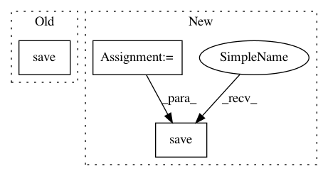

f22814f2405f83179c99f1fd4b895671bbdb124c,tools/scripts/features/lmdb_conversion.py,LMDBConversion,extract,#LMDBConversion#,76
Before Change
os.path.join(self.args.features_folder, file_base_name),
item["features"],
)
np.save(
os.path.join(self.args.features_folder, info_file_base_name),
tmp_dict,
)
def execute(self):
if self.args.mode == "convert":
self.convert()
After Change
path = os.path.join(self.args.features_folder, file_base_name)
if PathManager.exists(path):
continue
info_path = os.path.join(self.args.features_folder, info_file_base_name)
base_path = "/".join(path.split("/")[:-1])
PathManager.mkdirs(base_path)
np.save(PathManager.open(path, "wb"), item["features"])
np.save(PathManager.open(info_path, "wb"), tmp_dict)
def execute(self):
if self.args.mode == "convert":
self.convert()
In pattern: SUPERPATTERN
Frequency: 3
Non-data size: 3
Instances
Project Name: facebookresearch/pythia
Commit Name: f22814f2405f83179c99f1fd4b895671bbdb124c
Time: 2021-02-24
Author: asg@fb.com
File Name: tools/scripts/features/lmdb_conversion.py
Class Name: LMDBConversion
Method Name: extract
Project Name: ClementPinard/FlowNetPytorch
Commit Name: 5d8814fc8db0f78db677e768e2494f59ae46e66e
Time: 2019-04-04
Author: clement.pinard@parrot.com
File Name: run_inference.py
Class Name:
Method Name: main
Project Name: ncullen93/torchsample
Commit Name: 15ac1c2bb2627bb8fbb89b0b64709e9a50be02fd
Time: 2017-05-13
Author: ncullen.th@dartmouth.edu
File Name: torchsample/transforms/tensor_transforms.py
Class Name: ToFile
Method Name: __call__